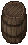
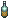

×50
×50 ×2
×2
 ×4
×4 ×1
×1distillery [蒸留釜]
作成には複数の工程が必要で、下表の材料が必要となります。| ×50 |
鍛冶 | ×2 |
細工 | |
| ×4 |
||||
| ×1 |
||||
 empty liquor barrel[蒸留酒の樽]
大工スキルを使い作成します（収納）。作成には、 木材×50必要です。
木材×50必要です。
 wheat wort[麦汁]
wheat wort[麦汁]
 小麦粉、
小麦粉、 水および
水および 空き瓶が必要です。
空き瓶が必要です。
yeast[酵母]
酵母は、Orc系のモンスターが所持しています。| 酒名 | 必要材料 | 熟成期間 |
 Whiskey [ウイスキー] |
yeast
wheat wort×3 |
3日 |
Bourbon [バーボン] |
yeast
wheat wort×3
 bowl of corn×3 bowl of corn×3
|
3日 |
|  Spirytus [スピリタス] |
yeast
wheat wort×3
 bowl of potetoes×3 bowl of potetoes×3
|
なし |
Cassis [カシス] |
yeast
wheat wort×3
bowl of potetoes×3
 tribal berry×3 tribal berry×3
|
1日 |
Melon Liqueur [メロンリキュール] |
yeast
wheat wort×3
bowl of potetoes×3
honeydew melon×3 |
1日 |
Mist [ミスト] |
yeast
wheat wort×3
 jar of honey×3 jar of honey×3
|
2日 |
| 酒名 | 必要材料 | 熟成期間 |
Akvavit [アクアビット] |
yeast
pitcher of water×0.5
bowl of potetoes×3
|
なし |
Arak [アラック] |
yeast
pitcher of water×0.5
bunch of date×3 |
10時間 |
Corn Whiskey [コーンウィスキー] |
yeast
pitcher of water×0.5
bowl of corn×3
|
3日 |
| 酒名 | 必要材料 | 熟成期間 |
Brandy [ブランデー] |
 pitcher of wine×4 pitcher of wine×4
|
2日 |